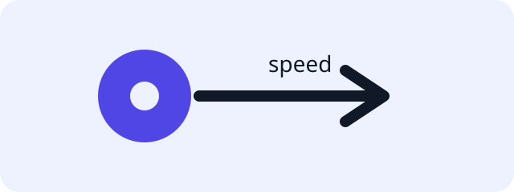

Welcome to the DASC lab starter project.
Complete the following exercise:
Unicycle forward dynamics — UnicycleDynamics.f (src/dasc_lab/dynamics/unicycle.py:7-9)
For the example model, the commanded forward speed is carried into the first derivative component while the second state component is preserved.
